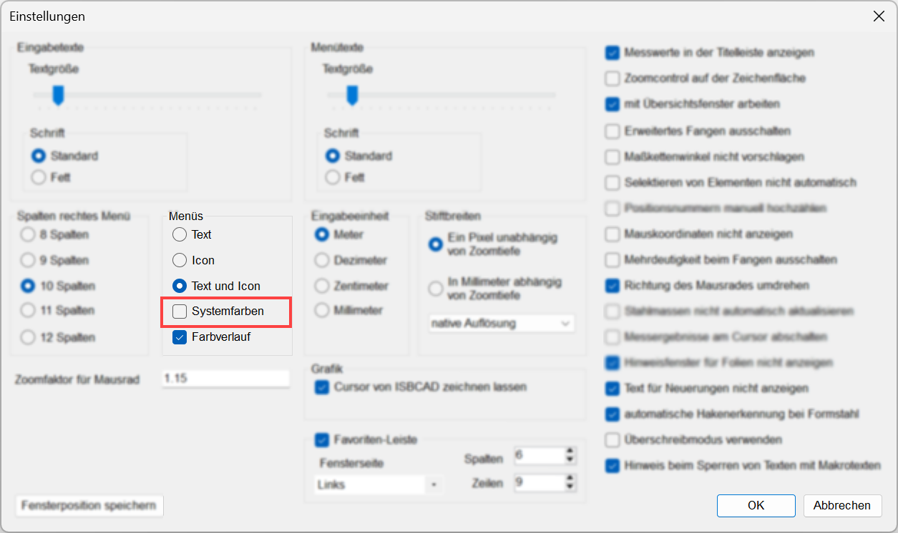

")
Farbeinstellungen für das Konstruktions- und Bewehrungsprogramm.
Konstruktionsprogramm
Farbeinstellungen für die Zeichenfläche und Zeichenhilfsmittel (z. B. Cursor, Zeichenmarke, Markierungen, Hilfspunkte und -linien).
Um Farbeinstellungen zu ändern: §Klicken Sie auf das gewünschte Farbfeld. Der Dialog Farbe wird geöffnet. §Sie können eine Grundfarbe wählen oder eigene Farben mit Farbe hinzufügen definieren. §Verschieben Sie mit gedrückter Maustaste das Kreuz im Farbauswahlfeld, um die Farbanteile für Rot, Grün und Blau zu verändern. Verwenden Sie den Schieberegler für die Helligkeit. §Klicken Sie die gewünschte Farbe an und bestätigen mit OK. Die gewählte Farbe wird übernommen und im Farbfeld angezeigt. Cursor Farbe des Fadenkreuzes (Großer Cursor) und des Auswahlrechtecks (Selektion), wenn [Systemdaten | Fangrechteck/Cursor → Großer Cursor (Fadenkreuz)] eingeschaltet ist. Ist der "Große Cursor" deaktiviert, wird nur das Auswahlrechteck in dieser Farbe dargestellt. Hintergrund Restfläche Um die Farbe für die Restfläche einstellen zu können, stellen Sie sicher, dass in den Einstellungen bei der Option Systemfarben kein Haken ( Textfeld Rahmenfarbe In allen Funktionen, mit denen Textfelder bearbeitet werden können, werden die Rahmenlinien in dieser Farbe dargestellt. aktive Textfeld Rahmenfarbe Beim Erstellen und Ändern von Textfeldern wird der Rahmen in dieser Farbe dargestellt. |
 ) gesetzt ist. [
) gesetzt ist. [Farbeinstellungen für die Menü-Schaltflächen im Funktionsbereich und in der unteren Menüleiste. Um Änderungen an den Menüs vornehmen zu können, stellen Sie sicher, dass in den Einstellungen bei der Option Systemfarben kein Haken (  Die Texte in der Abfragezeile lassen sich auch mit einer aktiven Systemfarben-Option ändern. Zuweisung der Farbeinstellungen
|
Zugehörige Referenz: